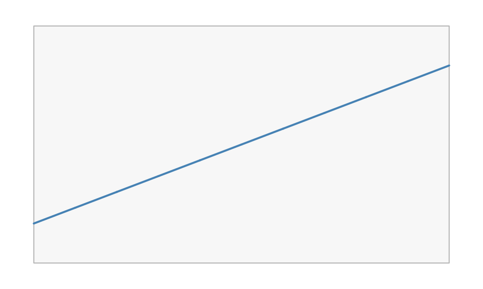
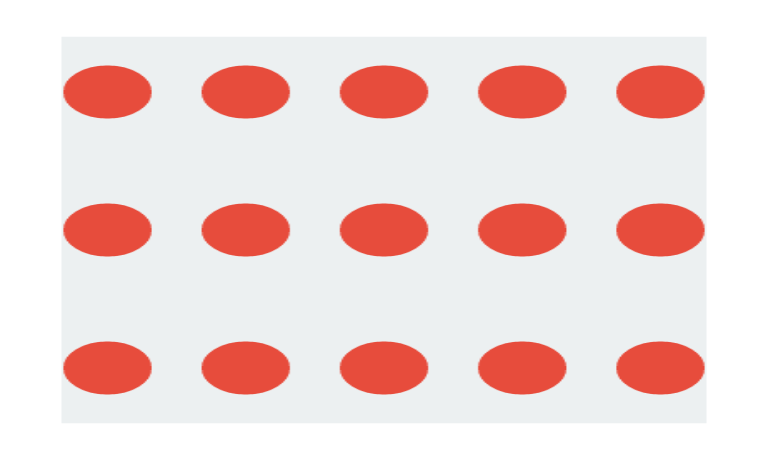
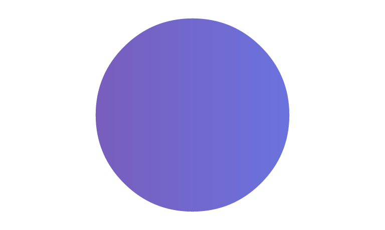

This article covers the two pieces you spend most of your time with in vellum: the scene graph (units, viewports, and the tree they form) and the paint model (gradients, patterns, and masks) shared across every backend.
The scene graph
A vellum scene is a tree. The root is the page created by
vl_scene(); every push() adds a
vl_viewport() child and descends into it; every
draw() appends a grob at the current level;
pop() climbs back up. The tree is retained rather than
drawn-and-forgotten, which is what enables the queries in
vignette("retained-mode").
Because it is a tree, viewports nest, and a child’s geometry is expressed relative to its parent. That is the whole mechanism behind panels, insets, and faceting: push a viewport for a sub-region, draw inside it in local coordinates, then pop.
vl_scene(6, 2.4, bg = "white") |>
# a full-width band
draw(rect_grob(height = 0.6, gp = vl_gpar(fill = "#eef2f6", col = NA))) |>
# an inset viewport occupying the middle third
push(vl_viewport(x = 0.5, width = 1 / 3, height = 0.8)) |>
draw(rect_grob(gp = vl_gpar(fill = "#3a7bd5", col = NA))) |>
draw(text_grob("inset", gp = vl_gpar(col = "white", fontface = "bold"))) |>
pop()Units
Coordinates and sizes are vl_unit() vectors: a value
paired with a unit name. Each element carries its own unit, so one
vector can mix coordinate systems, and a grob can even use different
units on its x and y axes.
The units you reach for most:
-
"npc"(the default): normalised parent coordinates,0at bottom/left and1at top/right of the current viewport. -
"native": the enclosing viewport’sxscale/yscale, so data values map directly. This is what you use for plotted data. -
"mm","cm","in","pt": absolute physical lengths that keep their size regardless of the viewport.
A bare number is interpreted in the grob’s default units (usually
"npc"), so x = 0.5 and
x = vl_unit(0.5, "npc") are the same thing.
vl_unit(1:3, "native")
#> <vellum_unit[3]>
#> [1] 1native 2native 3native
vl_unit(c(0.5, 1), c("npc", "in"))
#> <vellum_unit[2]>
#> [1] 0.5npc 1.0in"native" units need a viewport with scales to resolve
against. Set xscale and yscale when you
push:
vl_scene(5, 3, bg = "white") |>
push(vl_viewport(
width = 0.86, height = 0.82,
xscale = c(0, 10), yscale = c(-5, 25)
)) |>
draw(rect_grob(gp = vl_gpar(fill = "grey97", col = "grey70"))) |>
draw(lines_grob(
x = vl_unit(0:10, "native"),
y = vl_unit((0:10) * 2, "native"),
gp = vl_gpar(col = "steelblue", lwd = 2)
)) |>
pop()
Absolute and relative units compose within a viewport, and font- or
string-relative units ("char", "line",
"strwidth") resolve to millimetres at construction. Mixing
a relative and an absolute unit in a single arithmetic expression (say
vl_unit(1, "npc") - vl_unit(2, "mm")) is deferred and
reported rather than silently guessed, so an ambiguous offset fails
loudly instead of drawing in the wrong place.
The paint model
Any fill in vl_gpar() can be more than a
flat colour. The same three paint types work identically on the raster,
SVG, and PDF backends (with the documented exception that the PDF
backend does not yet rasterise patterns).
Gradients
linear_gradient() and radial_gradient()
interpolate between colour stops. Their geometry is given in a
coordinate system ("npc" by default) and is resolved
against the viewport at draw time, so a gradient transforms with its
grob just like the outline does.
vl_scene(6, 2.2, bg = "white") |>
push(vl_viewport(x = 0.28, width = 0.44)) |>
draw(rect_grob(
width = 0.8, height = 0.7,
gp = vl_gpar(fill = linear_gradient(c("#1b2a4a", "#3a7bd5")), col = NA)
)) |>
pop() |>
push(vl_viewport(x = 0.72, width = 0.44)) |>
draw(circle_grob(
r = 0.34,
gp = vl_gpar(fill = radial_gradient(c("#f6d365", "#fda085")), col = NA)
)) |>
pop()Patterns
vl_pattern() fills a shape by tiling a grob (or a list
of grobs). The tile is authored in the unit square and repeated across a
cell whose size you choose.
tile <- list(
rect_grob(gp = vl_gpar(fill = "#ecf0f1", col = NA)),
circle_grob(r = 0.32, gp = vl_gpar(fill = "#e74c3c", col = NA))
)
vl_scene(4, 2.4, bg = "white") |>
draw(rect_grob(
width = 0.84, height = 0.84,
gp = vl_gpar(fill = vl_pattern(tile, width = 0.18, height = 0.3), col = NA)
))
Masks and group opacity
A mask is a grob whose coverage modulates the visibility of a
viewport’s contents. Wrap it with as_mask() and pass it to
vl_viewport(mask = ...). Here a linear gradient is clipped
to a circular alpha mask.
vl_scene(4, 2.4, bg = "white") |>
push(vl_viewport(
mask = as_mask(circle_grob(r = 0.42, gp = vl_gpar(fill = "white", col = NA)))
)) |>
draw(rect_grob(gp = vl_gpar(fill = linear_gradient(c("#7f53ac", "#647dee")), col = NA))) |>
pop()
Related to masks is group opacity. Setting
vl_viewport(alpha = ...) composites the viewport’s contents
as a single isolated layer at that opacity, so overlapping elements do
not accumulate the way per-element vl_gpar(alpha = ) would.
That distinction (compositing a group versus fading each mark) is
exactly the kind of control a grammar layer needs from its backend.
Recap
- A scene is a retained tree of nested viewports and grobs, built with
push()/draw()/pop(). -
vl_unit()vectors express geometry;"npc"is relative to the viewport,"native"follows the data scales, and"mm"and friends are absolute. -
vl_gpar(fill = )accepts gradients and patterns, andvl_viewport()accepts masks, group opacity, and blend modes, all consistent across backends.
Next, see vignette("retained-mode") for what the
retained tree lets you do after it is built. ```